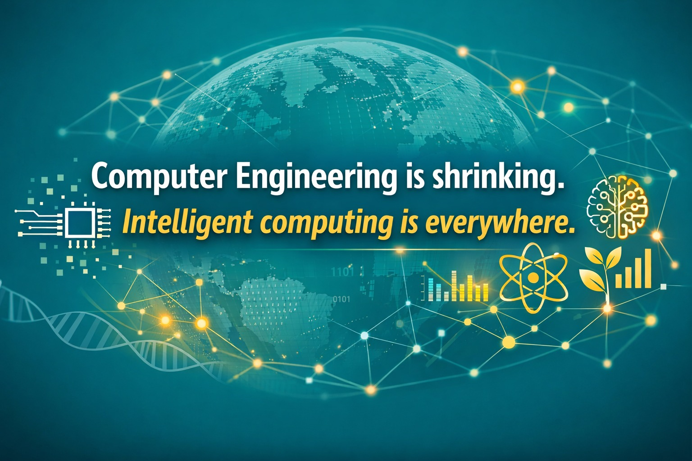

จาก Computer Science สู่ Computational Everything เมื่อทุกสาขากำลังถูกคอมพิวเตอร์เขียนใหม่
{kind=link}

บทความนี้เสนออย่างตรงไปตรงมาว่า คอมพ์เปล่า ๆ หรือ computer science ที่ไม่รู้ศาสตร์อื่น กำลังลดตลาดงานของตัวเองโดยไม่รู้ตัว เพราะงานลักษณะนี้ถูกบีบให้เหลือเพียงบทบาทแกนกลางของระบบ เป็นงานที่แยกชิ้นได้ outsource ได้ และในหลายส่วน AI ก็ทำได้ดีขึ้นเรื่อย ๆ
จุดพลิกสำคัญของข้อเขียนอยู่ที่ประสบการณ์ส่วนตัวของผู้เขียน ซึ่งเล่าว่างานแรกในชีวิตที่มูลค่าเกินหนึ่งล้านบาทไม่ใช่งานเว็บ แอป หรือระบบทั่วไป แต่เป็นงาน bioinformatics ทั้งที่ตัวเองไม่เคยชอบชีววิทยามาก่อน ประสบการณ์นี้ทำให้เห็นชัดว่า มูลค่าของงานคอมพิวเตอร์ไม่ได้อยู่ที่โค้ดยากแค่ไหน แต่อยู่ที่ว่าโค้ดนั้นเข้าไปแก้ปัญหาอะไรในโลกจริงได้บ้าง
แกนกลางของบทความนี้คือการย้ายจุดสนใจจากคำถามว่าใครเขียนโค้ดเก่งกว่าใคร ไปสู่คำถามว่า ใครเข้าใจปัญหาจริงของโลกมากพอจะใช้คอมพิวเตอร์สร้างผลกระทบได้ เพราะในตลาดที่ AI และ outsourcing กดมูลค่างานแกนกลางลงเรื่อย ๆ ความแตกต่างไม่ได้อยู่ที่ภาษาโปรแกรมหรือ framework แต่อยู่ที่ความสามารถในการเชื่อม computation เข้ากับ domain ที่มีเดิมพันสูง
คอมพ์เปล่า ๆ จะถูกบีบไปอยู่แค่แกนกลางของระบบ
ผู้เขียนอธิบายว่า หากไม่รู้แพทย์ ไม่รู้เกษตร ไม่รู้ชีววิทยา เคมี หรือระบบจริง บทบาทของคนคอมพ์จะถูกจำกัดให้เหลือเพียงการเขียนโค้ดตามโจทย์ ทำโมเดลตามสเปก หรือ optimize ระบบที่คนอื่นออกแบบไว้แล้ว งานประเภทนี้เป็นเพียง แกนกลางของระบบ ไม่ใช่งานที่ตั้งโจทย์ ไม่ใช่งานที่อยู่ใกล้แอปพลิเคชันจริง และไม่ใช่งานที่ต้องรับผิดชอบผลลัพธ์โดยตรง
ปัญหาคือ งานลักษณะนี้ถูกแยกชิ้นได้ง่าย ถูกกดมูลค่าได้ง่าย และแข่งขันสูงมาก เพราะทั้ง AI และตลาดแรงงานทั่วโลกกำลังดันให้มันกลายเป็นงานมาตรฐาน หากไม่อยู่ในบริษัทระดับยอดภูเขาน้ำแข็งที่มีไม่กี่แห่ง คนส่วนใหญ่จะเผชิญตลาดที่แคบลงเรื่อย ๆ
งานคอมพิวเตอร์ที่มูลค่าสูง อยู่ใกล้ปัญหาจริงของชีวิต
ในทางกลับกัน งานคอมพิวเตอร์ที่ผสานกับการแพทย์ เกษตรและอาหาร ชีววิทยา เคมี ยา การเงิน ภัยพิบัติ หรือสิ่งแวดล้อม กลับมีมูลค่าสูงกว่าอย่างเป็นระบบ เพราะมันวัดคุณค่าจาก ผลกระทบจริง ไม่ใช่จากความยากของโค้ดเพียงอย่างเดียว
ตัวอย่าง bioinformatics ในบทความทำให้เห็นชัดว่า ในโลกของชีววิทยาและยา การทดลองจริงแพง ใช้เวลานาน และความผิดพลาดมีต้นทุนสูงมาก คอมพิวเตอร์จึงกลายเป็นตัวคูณมูลค่าโดยตรง อัลกอริทึมที่ช่วยคัดกรองหรือจำลองผลลัพธ์ล่วงหน้า สามารถประหยัดเงินและเวลาได้ในระดับที่เปลี่ยนสถานะของงานทันที
การไม่รู้ศาสตร์อื่น คือการลดตลาดแรงงานของตัวเอง
ประโยคที่แรงที่สุดประโยคหนึ่งของโพสต์คือ การไม่รู้ศาสตร์อื่นไม่ใช่เพียงข้อจำกัดทางวิชาการ แต่คือการลดตลาดแรงงานของตัวเอง เพราะคนที่รู้แต่คอมพ์จะเหลือตลาดแบบ software ทั่วไป IT service หรือ AI แบบ generic ซึ่งเป็นตลาดที่คนล้นและถูกแทนที่ได้ง่าย
แต่ถ้ารู้คอมพ์และเข้าใจศาสตร์อื่นในระดับใช้งาน ตลาดจะขยายไปสู่ HealthTech, Bioinformatics, AgriTech, Pharma, Energy หรือ Climate ทันที สิ่งที่เปลี่ยนจึงไม่ใช่แค่ระดับความเก่ง แต่คือสถานะในตลาดแรงงาน จากคนที่หาได้ทั่วไปไปเป็นคนที่ ขาดแคลน เพราะยืนอยู่กลางสองโลก
อนาคตของ Computer Science จะหดตัว และกระจายตัวพร้อมกัน
บทความนี้ไม่ได้บอกว่า computer science จะหมดความสำคัญ แต่บอกว่ามันจะ หดตัวในรูปแบบเดิม และกระจายตัวเข้าไปในทุกสาขา ความสามารถด้าน AI การคิดเชิงอัลกอริทึม การออกแบบระบบ และการทำงานกับข้อมูล จะไม่ใช่ทักษะเฉพาะของเด็กคอมพ์อีกต่อไป แต่จะกลายเป็นพื้นฐานของแทบทุกวิชาชีพ
ในความหมายใหม่นี้ ทุกคนอาจกลายเป็น “computer scientist” ได้ หากมีแนวคิดทางคอมพิวเตอร์เชิงลึกพร้อมกับความรู้ลึกในสาขาของตัวเอง นี่เองคือเหตุผลที่ผู้เขียนมองว่า AIEP ไม่ใช่ทางเลือกเสริม แต่เป็นทิศทางหลักของการศึกษาในยุคต่อไป
จากประสบการณ์ส่วนตัว ถึงทิศทางของสาขาคอมพิวเตอร์
ข้อสรุปช่วงท้ายมีน้ำหนักมาก เพราะผู้เขียนยอมรับตรง ๆ ว่าเส้นทางที่พาออกจากโลกของ “คอมพ์เปล่า ๆ” คือ bioinformatics ทั้งที่ไม่เคยคิดว่าจะมาทางนี้มาก่อน และเมื่อมันกลายเป็นอาชีพที่อยู่รอด มีความหมาย และสร้างคุณค่าได้จริง ก็ทำให้เห็นว่าบางครั้ง ความอยู่รอดอาจสำคัญกว่าความชอบ
ในมุมนี้ โครงการ AIEP ของมหาวิทยาลัยเกษตรศาสตร์จึงไม่ใช่เพียงการ “ขายของ” หรือทำหลักสูตรให้ทันสมัย แต่เป็นการปรับตัวเชิงโครงสร้างในโหมดที่ผู้เขียนเรียกว่า โหมดหนีตาย เพราะสาขาคอมพิวเตอร์จะลดคนบางด้านลง และจะงอกเพิ่มอย่างชัดเจนในพื้นที่ที่ต้องการการคำนวณร่วมกับ domain อื่นมากขึ้น